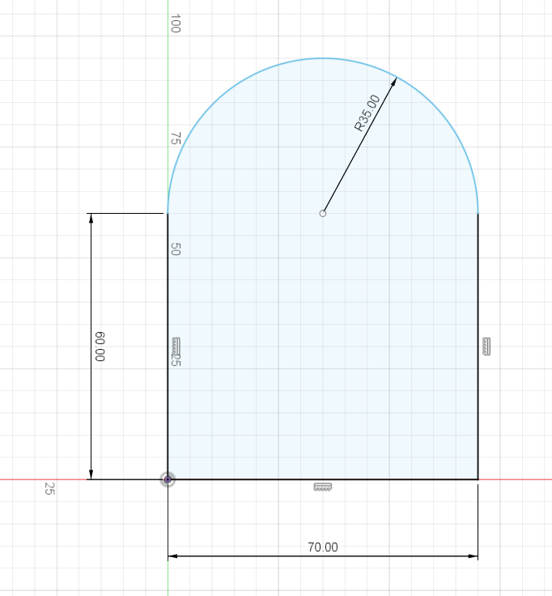
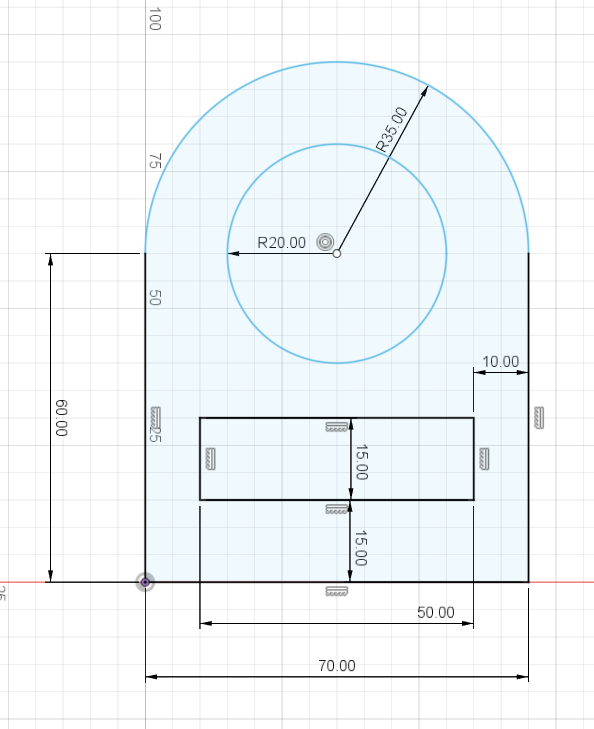

For our first exercise, we were tasked to sketch the above picture. I first started off by drawing a rectangle from the origin, with the dimensions 60mmx70mm. I then drew a circle, on the midpoint of the top of the rectangle, with the diameter being the same length as the rectangle, or a radius of 35. I then trimmed off the bottom part of the circle to give me the shape as showen below:
After that, I drew another circle from the midpoint of the previous circle, with the radius of 20, based on the reference photo. I then drew a rectangle that is 15mm from the bottom of its base and 10mm from the side. The rectangle is then dimensioned 50mmx15mm:
